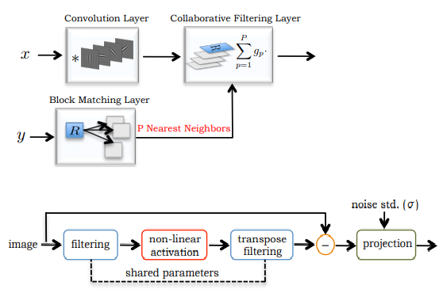
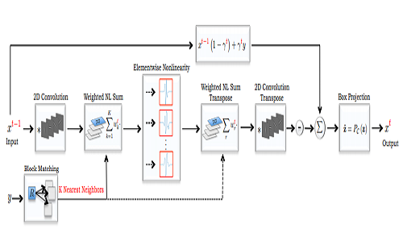
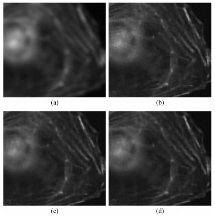
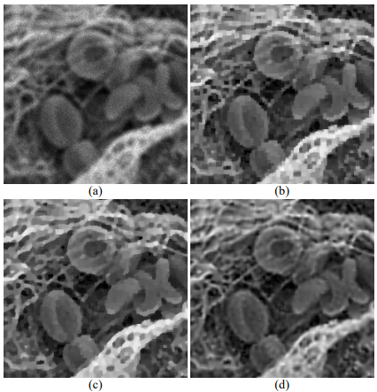
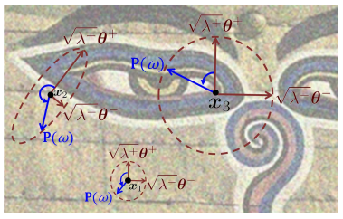

Publications
Highlights
(For a full list see below or go to Google Scholar)

We design a novel network architecture for learning discriminative image models that are employed to efficiently tackle the problem of grayscale and color image denoising. Based on the proposed architecture, we introduce two different variants. The first network involves convolutional layers as a core component, while the second one relies instead on non-local filtering layers and thus it is able to exploit the inherent non-local self-similarity property of natural images.
S. Lefkimmiatis
IEEE Computer Vision and Pattern Recognition (CVPR), Salt Lake City, UT, USA (June 2018). Presentation Video

We propose a novel deep network architecture for grayscale and color image denoising that is based on a non-local image model. Our motivation for the overall design of the proposed network stems from variational methods that exploit the inherent non-local self-similarity property of natural images. We build on this concept and introduce deep networks that perform non-local processing and at the same time they significantly benefit from discriminative learning.
S. Lefkimmiatis
IEEE Computer Vision and Pattern Recognition (CVPR), Honolulu, HI, USA (July 2017).

We present nonquadratic Hessian-based regularization methods that can be effectively used for image restoration problems in a variational framework. Motivated by the great success of the total-variation (TV) functional, we extend it to also include second-order differential operators. Specifically, we derive second-order regularizers that involve matrix norms of the Hessian operator.
S. Lefkimmiatis, A. Bourquard, and M. Unser
IEEE Trans. Image Process., vol. 21, no. 3, pp. 983-995 (March 2012).

We introduce a novel family of invariant, convex, and non-quadratic functionals that we employ to derive regularized solutions of ill-posed linear inverse imaging problems. The proposed regularizers involve the Schatten norms of the Hessian matrix, computed at every pixel of the image. They can be viewed as second-order extensions of the popular totalvariation (TV) semi-norm since they satisfy the same invariance properties.
S. Lefkimmiatis, J. P. Ward, and M. Unser
IEEE Trans. Image Process., vol. 22, no. 5, pp. 1873-1888 (May 2013).

Poisson inverse problems arise in many modern imaging applications, including biomedical and astronomical ones. The main challenge is to obtain an estimate of the underlying image from a set of measurements degraded by a linear operator and further corrupted by Poisson noise. In this work, we propose an efficient framework for Poisson image reconstruction, under a regularization approach which depends on matrix-valued regularization operators. In particular, the employed regularizers involve the Hessian as the regularization operator and Schatten matrix norms as the potential functions. For the solution of the problem, we propose two optimization algorithms which are specifically tailored to the Poisson nature of the noise.
S. Lefkimmiatis and M. Unser
IEEE Trans. Image Process., vol. 22, no. 11, pp. 4314-4327.

We introduce a novel generic energy functional that we employ to solve inverse imaging problems within a variational framework. The proposed regularization family, termed as Structure tensor Total Variation (STV), penalizes the eigenvalues of the structure tensor and is suitable for both grayscale and vector-valued images. It generalizes several existing variational penalties, including the Total Variation (TV) semi-norm and vectorial extensions of it.
S. Lefkimmiatis, A. Roussos, P. Maragos, and M. Unser
SIAM J. Imaging Sci., vol. 8, issue 2, pp. 1090-1122 (May 2015).
Full List
Journal Articles
Improved Computational Efficiency of Locally Low Rank MRI Reconstruction Using Iterative Random Patch Adjustments
A. Saucedo, S. Lefkimmiatis, R. Novena, and K. Sung
IEEE Trans. Medical Imaging, vol. 36, issue 6, pp. 1209-1220 (June 2017)
Non-local Structure Tensor Functionals for Image Regularization
S. Lefkimmiatis and S. Osher
IEEE Trans. Computational Imaging, vol. 1, issue 1, pp. 16-29 (June 2015)
Structure Tensor Total Variation
S. Lefkimmiatis, A. Roussos, P. Maragos, and M. Unser
SIAM J. Imaging Sci., vol. 8, issue 2, pp. 1090-1122 (May 2015)
Improved Variational Denoising of Flow Fields with Application to Phase-Contrast MRI Data
E. Bostan, S. Lefkimmiatis, O. Vardoulis, N. Stergiopulos, and M. Unser
IEEE Signal Process. Letters, vol. 22, no. 6, pp. 762-766 (June 2015)
Constrained regularized reconstruction of X-ray-DPCI tomograms with weighted-norm
M. Nilchian, C. Vonesch, S. Lefkimmiatis, P. Modregger, M. Stampanoni, and M. Unser
Optics Express, vol. 21, issue 26, pp. 32340-32348 (December 2013)
Poisson Image Reconstruction with Hessian Schatten-Norm Regularization
S. Lefkimmiatis and M. Unser
IEEE Trans. Image Process., vol. 22, no. 11, pp. 4314-4327
Hessian Schatten-Norm Regularization for Linear Inverse Problems
S. Lefkimmiatis, J. P. Ward, and M. Unser
IEEE Trans. Image Process., vol. 22, no. 5, pp. 1873-1888 (May 2013)
Hessian-Based Norm Regularization for Image Restoration with Biomedical Applications
S. Lefkimmiatis, A. Bourquard, and M. Unser
IEEE Trans. Image Process., vol. 21, no. 3, pp. 983-995 (March 2012)
Bayesian inference on multiscale models for Poisson intensity estimation- Applications to photon-limited image denoising
S. Lefkimmiatis, P. Maragos, and G. Papandreou
IEEE Trans. Image Process., vol. 18, no. 8, pp. 1724-1741 (August 2009)
A generalized estimation approach for linear and nonlinear microphone array post-filters
S. Lefkimmiatis and P. Maragos
Speech Communication, vol. 49, pp. 657-666 (July 2007)
Conference Proceedings
Universal Denoising Networks- A Novel CNN Architecture for Image Denoising
S. Lefkimmiatis
IEEE Computer Vision and Pattern Recognition (CVPR), Salt Lake City, UT, USA (June 2018)
Non-Local Color Image Denoising with Convolutional Neural Networks
S. Lefkimmiatis
IEEE Computer Vision and Pattern Recognition (CVPR), Honolulu, HI, USA (July 2017)
Deep network training based sparsity model for reconstruction
Lin, S. Lefkimmiatis, and S. Kyunghyun
In Proc. 25th ISMRM Meeting, Hawaii, USA (April 2017)
Vectorial non-local total variation regularization for calibration-free parallel MRI reconstruction
S. Lefkimmiatis, A. Saucedo, S. Osher, and S. Kyunghyun
In Proc. Int. Symp. Biomedical Imaging (ISBI’15), Brooklyn, NY (April 2015)
Novel non-local total variation regularization for constrained MR reconstruction
A. Saucedo, S. Lefkimmiatis, S. Osher, and S. Kyunghyun
In Proc. 23rd ISMRM Meeting, Toronto, Canada (May 2015)
High-performance 3D Deconvolution of Fluorescence Micrographs
S. Kromwijk, S. Lefkimmiatis and M. Unser
In Proc. Int. Conf. Image Processing (ICIP’14), pp. 3029-3032, Paris, France (Oct. 2014)
Digital phase reconstruction via iterative solutions of transport-of-intensity equation
E. Froustey, E. Bostan, S. Lefkimmiatis, and M. Unser
in Proc. 13th IEEE Workshop on Information Optics (WIO’14), pp. 1-3, Neuchatel NE, Switzerland (July 2014)
Convex Generalizations of Total Variation based on the Structure Tensor with Applications to Inverse Problems
S. Lefkimmiatis, A. Roussos, M. Unser, and P. Maragos
In Scale Space and Variational Methods in Computer Vision, vol. 7893, pp. 48-60, Springer Berlin Heidelberg (2013)
3D Poisson Microscopy Deconvolution with Hessian Schatten-Norm Regularization
S. Lefkimmiatis and M. Unser
In Proc. Int. Symp. Biomedical Imaging (ISBI’13), pp. 165-168, San Francisco, CA, USA (April 2013)
Benchmarking Image-Processing Algorithms for Biomicroscopy- Reference Datasets and Perspectives
D. Sage, H. Kirshner, C. Vonech, S. Lefkimmiatis, and M. Unser
In Proc. 21st European Signal Processing Conf. (EUSIPCO’13), Marrakech, Morocco (Sep. 2013)
A Projected Gradient Algorithm for Image Restoration under Hessian Matrix-Norm Regularization
S. Lefkimmiatis and M. Unser
In Proc. Int. Conf. Image Processing (ICIP’12), pp. 3029-3032, Orlando, FL (Sep. 2012)
Hessian-Based Regularization For 3-D Microscopy Image Restoration
S. Lefkimmiatis, A. Bourquard, and M. Unser
In Proc. Int. Symp. Biomedical Imaging (ISBI’12), pp. 1731-1734, Barcelona, Spain (May 2012)
A Second-order Extension of TV Regularization for Image Deblurring
D. Zafer, S. Lefkimmiatis, A. Bourquard, and M. Unser
In Proc. Int. Conf. Image Processing (ICIP’11), pp. 713-716, Brussels, Belgium (Sep. 2011)
Poisson-Haar transform- A nonlinear multiscale representation for photon-limited image denoising
S. Lefkimmiatis, G. Papandreou, and P. Maragos
In Proc. IEEE Int. Conf. Image Processing (ICIP’09), pp. 3853-3856, Cairo, Egypt (Nov. 2009)
Photon-limited image denoising by inference on multiscale models
S. Lefkimmiatis, G. Papandreou, and P. Maragos
In Proc. IEEE Int. Conf. Image Processing (ICIP’08), pp. 2332-2335, San Diego, CA (Oct. 2008)
Multisensor multiband cross-energy tracking for feature extraction and recognition
S. Lefkimmiatis, P. Maragos, and A. Katsamanis
In Proc. IEEE Int. Conf. Acoustics, Speech, and Signal Processing (ICASSP’08), pp. 4741-4744, Las Vegas, NV, USA (April 2008)
Multiband, multisensor features for robust speech recognition
D. Dimitriadis, P. Maragos, and S. Lefkimmiatis
In Proc. Int. Conf. Speech Technology and Communication (ICSTC’07), Antwerp, Belgium (Aug. 2007)
Optimum Post-Filter Estimation for Noise Reduction in Multichannel Speech Processing
S. Lefkimmiatis and P. Maragos
In Proc. 14th European Signal Processing Conf. (EUSIPCO’06), Florence, Italy (Sep. 2006)
An Optimum Microphone Array Post-Filter for Speech Applications
S. Lefkimmiatis, D. Dimitriadis, and P. Maragos
In Proc. Int. Conf. Spoken Language Processing (ICSLP’06), pp. 2142-2145, Pittsburgh, PA, USA (Sep. 2006)
Technical Reports
Deep Image Demosaicking using a Cascade of Convolutional Residual Denoising Networks
F. Kokkinos and S. Lefkimmiatis
arxiv:1803.05215 (March 2018)
Universal Denoising Networks- A Novel CNN-based Network Architecture for Image Denoising
S. Lefkimmiatis
Skoltech (Nov. 2017)
Non-Local Color Image Denoising with Convolutional Neural Networks
S. Lefkimmiatis
Skoltech (Nov. 2016)